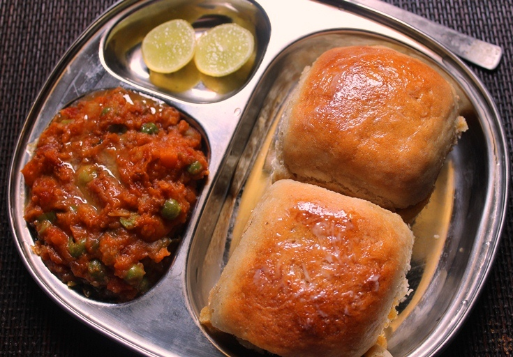

Pav Bhaji

Description
Pav Bhaji is a popular street food dish from India, particularly associated with the state of Maharashtra and
Mumbai in particular. It consists of a spicy mixture of mashed vegetables, typically including potatoes,
tomatoes, peas, onions, and peppers, cooked with a blend of spices such as cumin, coriander, turmeric, and red
chili powder. This mixture is served hot with buttered bread rolls known as pav.
The dish is usually prepared on a flat griddle and the vegetables are mashed together with a special pav bhaji
masala, giving it a rich and flavorful taste. It's often garnished with chopped onions, cilantro, and a squeeze
of lime juice for added freshness. Pav Bhaji is loved for its savory and spicy flavor profile and is enjoyed as
a snack or a meal by people of all ages across India.
Ingredients
Bhaji
- 450
gms
Mixed Vegetables (Potato, Cauliflower, Carrot, Beans, Capsicum)
- 2
Onion (Chopped)
- 1
Teaspoon
Ginger-Garlic Paste
1
Pinch
Salt
- 2
1
Pinch
Salt
Tomato (Chopped)
- 50
gms
Peas (Shelled)
- 2
Cups
Hot Water
- 2
Green Chillies (Slit)
- 0.5
Teaspoon
Turmeric Powder
- 1
Teaspoon
Red Chilli Powder
- 2
Teaspoons
Coriander Powder
- 1
Teaspoon
Cumin Powder
- 1
Teaspoon
Amchur Powder
- 2
Tablespoons
Coriander Leaves (Chopped)
- 2
Tablespoons
Lemon Juice
- 1
Sachet
MAGGI Masala-ae-Magic
- 1
Pinch
Salt
Pav
Steps
- Boil the mixed vegetables along with peas and 1 cup water in a pressure cooker for 1 whistle. Keep aside.
- Heat oil in a pan. Add chopped onions and fry till golden brown. Add ginger garlic paste and sauté. Now, add
tomatoes, green chilies, and all the spices like turmeric powder, chili powder, coriander powder, and cumin
powder. Fry till the masala is well combined.
- Add the cooked vegetables with water, MAGGI Masala-ae-Magic, salt as per taste and mix well. Mash the
vegetables with a spoon or masher, add amchur powder and mix well.
- Add the remaining water and simmer till the pav bhaji gravy thickens. Remove from the flame and add lemon
juice to zest it up.
- Garnish the gravy with coriander leaves and your Mumbai Street Style pav bhaji recipe is ready to be served
with some toasted Pavs. For the perfect start to your weekend or just to spice up your everyday cooking,
this easy Pav Bhaji recipe is a must try. The pav bhaji ingredients are easily available and make for a
delectable and healthy dish that will be loved by one and all in your family. This Mumbai Street Style
version of pav bhaji makes for a nutritious meal with a blend of vegetables that even your kids will enjoy!
Try it today. If you are looking to elevate the pav bhaji dish and impress your guests, check out our Cheesy
Pav Bhaji recipe with a modern restaurant style twist right here. It will make for a perfect cheesy
appetizer or evening snack that everyone will devour with relish.